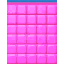
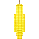
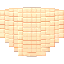
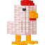
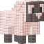
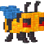

Game Design
Vòng chơi bắn khối màu, quản lý ô shooter và tiến trình ngoài màn của Cube Land.






Tổng quan vòng chơi
Quan sát từ dữ liệu và mã: màn kết hợp mô hình voxel màu, hàng chờ shooter, lượng đạn và các dock giới hạn. Người chơi chọn shooter để đưa vào dock; hệ thống xử lý bắn, mục tiêu nhìn thấy và các vật thể đặc biệt.
Hàm CanPlaceBlaster kiểm tra shooter có thể đặt, số ô cần dùng, số dock trống và trạng thái generator. Vì vậy, áp lực không gian phụ thuộc cả loại shooter và trạng thái hàng chờ.
Rotatelab.Scripts.DockManager$$CanPlaceBlaster · BlasterController · GridVisibilityController
Các trục tạo độ khó
| Trục | Bằng chứng | Hàm ý thiết kế |
|---|---|---|
| Không gian | 5 dock theo bản ghi level | Chọn thứ tự shooter để giữ chỗ cho các màu cần thiết. |
| Hình khối & màu | LayerData, VoxelPositions, ColorType, visibility grid | Khối phía ngoài có thể thay đổi khả năng tiếp cận lớp bên trong; cần đối chiếu rule bắn. |
| Hàng chờ & đạn | BlasterData, bulletCount, serializedPlaceableColumn | Thứ tự cột và lượng đạn tạo ràng buộc khác với số voxel đơn thuần. |
| Cơ chế đặc biệt | Ice, Gift, LargeVoxel và các mảng có entry trong level | Một số mục tiêu có trạng thái hoặc yêu cầu xử lý riêng. |
| Biến thể cấu hình | LevelVersion, level override, A/B catalog, round mode | Dữ liệu đóng gói không bảo đảm trùng cấu hình của mọi tài khoản. |
Đường cong nội dung
| Nhãn metadata | Số bản ghi |
|---|---|
| Normal | 600 |
| Hard | 167 |
| VeryHard | 83 |
689 bản ghi bật shouldLoop; 576 bản ghi bật shouldOfferMeteorShower. Có 731 contentHash khác nhau trong 850 bản ghi; không coi đây là 850 thiết kế hoàn toàn khác nhau. Đây là cờ và mã cấu hình, chưa phải số màn đã xác nhận xuất hiện trên UI.
Tiến trình & nguồn lực
CloudSaveData lưu LevelNumber, RoundNumber, Coins, Lives, sáu trường booster/tiện ích liên quan, tiến trình city, daily và thống kê lần thử. LevelManager có catalog level override và A/B test. Bộ báo cáo tách chi tiết cửa hàng, hoạt động định kỳ và leaderboard để dễ so sánh.
Nhận định thiết kế
- Đánh giá độ khó theo số dock, số màu, hàng chờ, đạn và vật thể đặc biệt; không dùng số voxel làm thước đo duy nhất.
- So sánh các level cùng nhãn độ khó nhưng khác số cột để nhận diện ràng buộc thứ tự.
- Đo fail, play-on và booster-use trước khi kết luận cấu hình nào tạo tắc nghẽn.
- Cần kiểm thử gameplay để xác định nhịp bắn, va chạm và cảm giác xoay mô hình.